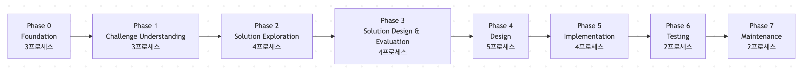

AI주도개발 통합시스템 v3.2.0 with Cursor Rules & Commands
이 프로젝트는 과제(문제) 선행형 AI 주도 개발 접근법을 체계화한 26개 통합 프롬프트 시스템입니다. 기존의 “기술 우선”, “Make(개발) 전제” 방식에서 벗어나, 진짜 문제(과제)에서 출발해 최적의 솔루션을 도출하는 것을 목표로 합니다.
v3.2.0의 혁신적인 진화
- 기술 선행 → 과제 선행형 접근으로의 근본적 전환
- 인지과학 기반 최적화로 개발 효율 향상
- 개인 개발 및 기업 개발 양쪽 지원
- .cursor/commands활용으로 통합성 강화
프롬프트 룰/커맨드 특징
🎯 과제 선행 접근
- 문제 심층 분석: 표면적 요구가 아닌 실제 문제를 특정
- 맥락 이해: 업계 및 경쟁, 규제 환경 속에서 문제 검증
- 가치 정량화: ROI 및 비즈니스 임팩트를 수치로 평가
🧠 인지과학 기반 최적화
- LRI 원칙: 인지 부하를 줄여 학습 효율 극대화
- 점진적 공개(Progressive Disclosure): 단계별 정보 제공
- 학습자 주도 설계: AI 의존 → 스스로 판단하는 역량 강화
🔄 Make or Buy판단
- 객관적 평가: 감정 배제, 데이터 기반 판단
- 다양한 선택지: Make · Buy · Hybrid 전략
- 리스크 고려: 기술·조직·시장 리스크 종합 평가
📈 단계적 가치 실현
- MVP 중심: 최소 기능부터 시작해 확장
- 지속 개선: 운영 이후에도 꾸준히 최적화
- 학습 중심: 프로젝트 자체를 조직 학습 기회로 활용
시스템 구성
7페이즈 및 26프로세스 구조
- 
Phase별 개요
- 0. Foundation(3): 프로젝트 기반 구축(명명 규칙, 표준 및 관리 정책)
- 1. Challenge Understanding(3): 진정한 과제 식별 및 우선 순위 지정(과제 분석 보고서 및 우선 순위)
- 2. Solution Exploration(4): 솔루션 탐색, Make/Buy 판단(시장 분석 및 솔루션 개요 설계)
- 3. Solution Design & Evaluation(4): 상세 설계, ROI 평가, 합의 형성(상세 설계서, ROI 평가, ADR)
- 4. Design(5): 디자인 및 명세서 작성(디자인 및 명세서 작성)
- 5. Implementation(4): 구현 및 테스트(구현 및 테스트)
- 6. Testing(2): 테스트 및 검증(테스트 및 검증)
- 7. Maintenance(2): 유지보수 및 개선(유지보수 및 개선)
5분 안에 시작하기
Quick Start
- 1. QUICK_START.md 읽기 (5분 소요)
- 2. 개인개발 or 기업개발 선택
- 3. 첫 프롬프트 실행
핵심 프롬프트 4가지
- 대화형 요구정의（Phase 3.3）: `03-interactive-requirements-definition.md`
- Make/Buy 판단（Phase 2.3）: `03-make-or-buy-analysis.md`
- 아키텍처 결정（Phase 3.4）: `04-architecture-decision.md`
- 인지과학적 디버깅（Phase 7.1）: `01-debug-cognitive.md`
실행 경로 (Make / Buy / Hybrid)
Make(자체 개발)
- 적용: 경쟁우위·독자요건·보안 강조
- 특징: 맞춤 개발·장기 투자·기술 내재화
- 리스크: 개발 지연·높은 난도·인력 의존
Buy(기성 제품 도입)
- 적용: 표준 기능 충족·빠른 도입·비용 절감
- 특징: 안정성·단기 도입·벤더 지원
- 리스크: 벤더 종속·커스터마이즈 한계·통합 이슈
Hybrid(혼합 전략)
- 적용: 복잡 요구·리스크 분산·점진 투자
- 특징: 유연성·학습 효과·위험 완화
- 리스크: 관리 복잡·통합 리스크
[사용방법] 1. 기본 실행 절차
Phase 0: 기반 설정 (0_foundation/)
- 0.1 - 01-naming-conventions.mdc: 명명규칙설정(필수)
- 0.2 - 02-coding-standards.mdc: 코딩표준 설정(필수)
- 0.3 - 03-document-management.mdc: 문서관리 정책(필수)
Phase 1: 과제 이해 (1_challenge_understanding/)
- 1.1 - 01-initial-interview.md: AI-이해관계자 인터뷰(필수)
- 1.2 - 02-root-cause-analysis.md: 원인 분석(5Why 등)(필수)
- 1.3 - 03-challenge-prioritization.md: 과제 우선순위(필수)
Phase 2: 솔루션 탐색 (2_solution_exploration/)
- 2.1 - 01-market-competitor-analysis.md: 시장·경쟁 분석(필수)
- 2.2 - 02-solution-necessity-check.md: 솔루션 필요성 확인(필수)
- 2.3 - 03-make-or-buy-analysis.md: Make/Buy 판단(필수)
- 2.4 - 04-solution-concept-design.md: 솔루션 개념 설계(필수)
Phase 3: 설계 평가 (3_solution_design_evaluation/)
- 3.1 - 01-detailed-solution-design.md: 고급 상세 설계(필수)
- 3.2 - 02-impact-roi-assessment.md: ROI 평가(필수)
- 3.3 - 03-interactive-requirements-definition.md: 대화형 요구정의(필수)
- 3.4 - 04-architecture-decision.md: 아키텍처 결정(필수)
[사용방법] 2. Make/Buy 분기로 조정
Make 판단시(자사 개발)
- Phase 4-7 완전 실행(설계→실장→테스트→유지보수)
- Phase 2.1 (시장 분석)에서 자사 개발의 우위성 확인
- Phase 5.1 (프로토타입 분석)을 중시
Buy 판단시(기존 제품 도입)
- Phase 4를 간소화(연동 설계만)
- Phase 5를 도입·설정 중심으로 변경
- Phase 2.1(시장 분석)에서 기존 SaaS 조사를 중점 실행
실행 패턴
표준 패턴(최적화 버전)
- 모든 단계를 순차적으로 수행하는 포괄적인 접근법
- Phase 0 → Phase 1 → Phase 2 → Phase 3 → Phase 4 → Phase 5 → Phase 6 → Phase 7
Make 노선 패턴
- 자체 개발에 특화된 접근법
- Phase 1(과제 이해) → Phase 2(Make 판단) → Phase 3(상세 설계) → Phase 4-5(개발) → Phase 6-7
Buy 노선 패턴
- 기존 제품 도입에 특화된 접근법
- Phase 1(과제 이해) → Phase 2(Buy 판단) → Phase 3(도입 설계) → Phase 5(도입) → Phase 6-7
긴급 대응 패턴
- 최소한의 단계로 신속하게 가치 제공
- Phase 1(기본 과제 파악) → Phase 2(신속 판단) → Phase 3(개요 설계) → Phase 5(실장·도입) → Phase 6-7
개인 개발 / 취미 개발 패턴
- 자기 상호 작용에 의한 요구 사항 명확화를 중시 한 학습 및 실험 접근법
- Phase 3.3(대화형 요구사항 정의) → Phase 3.4(아키텍처 결정) → Phase 4(설계) → Phase 5(실장) → Phase 6-7(테스트·보수)
개인 개발의 특징과 최적화 이유
- Phase 0(기반): 개인 규칙은 간단히 정해도 됨 (10분 정도의 가벼운 결정 수준)
- Phase 1(과제 이해): ✅ **선택가능** - 이미 스스로 문제와 목표가 명확하다면 생략 가능
- Phase 2(해결책 탐색): ✅ **선택가능** - 개인 개발은 보통 Make 전제라 시장 분석은 불필요
- Phase 3.1-3.2: ✅ **선택가능** - 상세 설계·ROI 평가는 작은 프로젝트에선 과도
- Phase 3.3: 🎯 **중요** - 대화형 요구정의 (막연한 아이디어 → 명확한 요구사항)
- Phase 3.4: 🎯 **필수** - 기술 스택 선택 및 아키텍처 결정
- Phase 4-7: ❌ **생략불가** - 실제 구현·테스트·운영은 반드시 필요
개인 개발에서 자기 대화(셀프 디스커션)의 가치
- 다중 시점 검토: 개발자, 사용자, 학습자, 미래의 나 등 여러 관점에서 고민
- 숨겨진 전제 발견: “왜 만드는가?”, “정말 필요한가?”를 깊이 파고들기
- 숨겨진 전제 발견: “왜 만드는가?”, “정말 필요한가?”를 깊이 파고들기
- 구현 전 설계 다지기: 진행 중 길을 잃지 않도록 요구사항을 명확히 정리
현재 버전
Version
- v3.2.0
- 릴리스일: 2025-09-16
- 주요 변경: 인지과학 기반 최적화를 통한 논리 플로우 재구성
이 시스템을 활용하면 실제 니즈에 부합하는 가치 높은 솔루션을 효율적으로 제공할 수 있습니다. 기술 중심이 아닌 문제(과제) 선행 접근을 통해 투자 대비 효과가 높은 프로젝트 실현을 목표로 합니다.
0_foundation/
01-naming-conventions.mdc
경로 : .cursor/rules/01-naming-conventions.mdc
|---------|------|------------|----------|
| 1.0.0 | 2025-01-18 | MAJOR | 초기버전 작성 |
---
# 네이밍 규칙 프롬프트
## 개요
이 프롬프트는 프로젝트 전반에 걸쳐 **일관된 네이밍 규칙**을 제공하여
코드의 가독성과 유지보수성을 높이는 것을 목표로 합니다.
## 기본 원칙
### 1. 명확성과 자기 설명성
- 이름은 기능이나 목적을 정확하게 표현해야 함
- 약어나 축약형은 일반적으로 널리 이해되는 것만 사용
- 모호하거나 지나치게 추상적인 네이밍은 피할 것
### 2. 일관성
- 프로젝트 전반에서 통일된 네이밍 패턴을 사용할 것
- 특정 컨텍스트나 도메인에서는 동일한 개념에 동일한 네이밍 적용
- 기존 코드 규약이나 업계 표준을 준수할 것
### 3. 적절한 길이
- 이름은 충분히 설명적이어야 하지만, 불필요하게 길어서는 안 됨
- 스코프가 넓을수록 더 구체적이고 설명적인 이름을 사용
- 단일 문자 변수명은 루프 카운터 등 제한적인 용도에만 사용
## 언어별 네이밍 규칙
### JavaScript/TypeScript
#### 변수 · 함수
| 종류 | 규칙 | 예시 |
|------|------|-----|
| 변수 | 카멜 케이스(camelCase) | `userName`, `isActive`, `apiResponse` |
| 함수 | 카멜 케이스(camelCase) | `getUserData()`, `calculateTotal()` |
| 프라이빗 변수 | 앞에 언더스코어(_) | `_privateVar`, `_internalState` |
| 상수 | 대문자 스네이크 케이스(SCREAMING_SNAKE_CASE) | `MAX_RETRY_COUNT`, `API_BASE_URL` |
| 불리언 값 | `is`, `has`, `can` 등의 접두사 사용 | `isValid`, `hasAccess`, `canEdit` |
#### 클래스 · 인터페이스
| 종류 | 규칙 | 예시 |
|------|------|-----|
| 클래스 | 파스칼 케이스(PascalCase) | `UserProfile`, `ApiClient`, `DataService` |
| 인터페이스 | 파스칼 케이스 + `I` 접두사 | `IUserData`, `IApiResponse` |
| 타입 정의 | 파스칼 케이스(PascalCase) | `UserType`, `ApiResponseType` |
| 제네릭 타입 파라미터 | 대문자 단일 문자 또는 설명적 이름 | `T`, `U`, `TItem`, `TKey` |
#### 파일 · 디렉토리
| 종류 | 규칙 | 예시 |
|------|------|-----|
| 컴포넌트 파일 | 파스칼 케이스(PascalCase) | `UserProfile.tsx`, `LoginForm.tsx` |
| 유틸리티 파일 | 카멜 케이스(camelCase) | `formatDate.ts`, `apiUtils.ts` |
| 테스트 파일 | `.test.ts` 또는 `.spec.ts` 접미사 | `UserProfile.test.tsx` |
| 디렉토리 | 카멜 케이스 또는 케밥 케이스(kebab-case) | `userServices/`, `user-services/` |
### Python
#### 변수 · 함수
| 종류 | 규칙 | 예시 |
|------|------|-----|
| 변수 | 스네이크 케이스(snake_case) | `user_name`, `is_active`, `api_response` |
| 함수 | 스네이크 케이스(snake_case) | `get_user_data()`, `calculate_total()` |
| 프라이빗 변수/함수 | 앞에 언더스코어(_) | `_private_var`, `_calculate_internal()` |
| 상수 | 대문자 스네이크 케이스(SCREAMING_SNAKE_CASE) | `MAX_RETRY_COUNT`, `API_BASE_URL` |
#### 클래스
| 종류 | 규칙 | 예시 |
|------|------|-----|
| 클래스 | 파스칼 케이스(PascalCase) | `UserProfile`, `ApiClient`, `DataService` |
| 메서드 | 스네이크 케이스(snake_case) | `get_data()`, `process_input()` |
| 프라이빗 메서드 | 앞에 언더스코어(_) | `_internal_method()` |
| 매직 메서드 | 앞뒤 더블 언더스코어(__) | `__init__()`, `__str__()` |
#### 파일 · 모듈
| 종류 | 규칙 | 예시 |
|------|------|-----|
| 모듈 파일 | 스네이크 케이스(snake_case) | `user_profile.py`, `api_client.py` |
| 패키지 | 스네이크 케이스(짧게) | `models/`, `utils/`, `api/` |
| 테스트 파일 | `test_` 접두사 | `test_user_profile.py` |
### SQL
| 종류 | 규칙 | 예시 |
|------|------|-----|
| 테이블 | 복수형 스네이크 케이스 | `users`, `product_categories` |
| 컬럼 | 스네이크 케이스 | `first_name`, `created_at`, `is_active` |
| 기본 키 | `id` 또는 `{테이블명}_id` | `id`, `user_id` |
| 외래 키 | 참조 테이블명 + `_id` | `user_id`, `product_category_id` |
| 인덱스 | `idx_{테이블명}_{컬럼명}` | `idx_users_email`, `idx_products_name` |
| 뷰(View) | `v_` 접두사 + 스네이크 케이스 | `v_active_users`, `v_product_inventory` |
| 저장 프로시저 | `sp_` 접두사 + 동사_명사 형태 | `sp_get_user_details`, `sp_update_inventory` |
### CSS/SCSS
| 종류 | 규칙 | 예시 |
|------|------|-----|
| 클래스명 | 케밥 케이스(kebab-case) | `.user-profile`, `.nav-item` |
| ID | 케밥 케이스(kebab-case) | `#main-content`, `#search-form` |
| BEM 블록 | 케밥 케이스(kebab-case) | `.card`, `.header` |
| BEM 엘리먼트 | 블록명 + `__` 연결 | `.card__title`, `.header__logo` |
| BEM 모디파이어 | 엘리먼트 + `--` 연결 | `.card--featured`, `.button--primary` |
| 변수 (SCSS 등) | 케밥 케이스 또는 스네이크 케이스 | `$primary-color`, `$font_size_large` |
## 영역별 네이밍 패턴
### UI 컴포넌트
| 종류 | 규칙 | 예시 |
|------|----------|-----|
| 컨테이너 컴포넌트 | `{기능}Container` | `UserContainer`, `ProductListContainer` |
| 프레젠테이셔널 컴포넌트 | 명사 또는 형용사+명사 | `UserCard`, `ProductList`, `PrimaryButton` |
| 폼(Form) 컴포넌트 | `{기능}Form` | `LoginForm`, `UserRegistrationForm` |
| 페이지 컴포넌트 | `{기능}Page` | `DashboardPage`, `ProfilePage` |
| 커스텀 훅 | `use{기능}` | `useAuth`, `useFormValidation` |
### API 관련
| 종류 | 규칙 | 예시 |
|------|----------|-----|
| API 클라이언트 | `{리소스}Api` | `UserApi`, `ProductsApi` |
| 요청 함수 | `{동사}{리소스}` | `getUser`, `createProduct`, `updateSettings` |
| 요청 타입 | `{리소스}{동사}Request` | `UserCreateRequest`, `ProductUpdateRequest` |
| 응답 타입 | `{리소스}{동사}Response` | `UserGetResponse`, `ProductListResponse` |
| 엔드포인트 상수 | `{리소스}_{동사}_ENDPOINT` | `USER_GET_ENDPOINT`, `PRODUCT_CREATE_ENDPOINT` |
### 데이터 모델
| 종류 | 규칙 | 예시 |
|------|----------|-----|
| 모델 클래스 | 단수형 명사 | `User`, `Product`, `Category` |
| DTO 클래스 | `{모델}Dto` | `UserDto`, `ProductDto` |
| 인터페이스 | `I{모델}` | `IUser`, `IProduct` |
| 리포지토리 | `{모델}Repository` | `UserRepository`, `ProductRepository` |
| 서비스 | `{모델}Service` | `UserService`, `AuthenticationService` |
## 프로젝트 특유의 네이밍 규칙
### 마이크로서비스
| 종류 | 규칙 | 예시 |
|------|----------|-----|
| 서비스명 | 기능을 나타내는 명사 (케밥 케이스) | `user-service`, `payment-service` |
| 이벤트 | `{리소스}{동사}Event` | `UserCreatedEvent`, `PaymentProcessedEvent` |
| 커맨드(Command) | `{동사}{리소스}Command` | `CreateUserCommand`, `ProcessPaymentCommand` |
| 쿼리(Query) | `{동사}{리소스}Query` | `GetUserQuery`, `ListProductsQuery` |
### 테스트
| 종류 | 규칙 | 예시 |
|------|----------|-----|
| 테스트 클래스 | `{테스트대상}Test` | `UserServiceTest`, `LoginComponentTest` |
| 테스트 메서드 | `test{기능}_{조건}_{기대결과}` | `testLogin_ValidCredentials_ReturnsUser` |
| 테스트 데이터 팩토리 | `{모델}Factory` | `UserFactory`, `ProductFactory` |
| 목(Mock) 객체 | `Mock{클래스명}` | `MockUserRepository`, `MockAuthService` |
## 금지 사항
다음과 같은 네이밍 패턴은 피해야 합니다:
1. **지나치게 일반적인 이름 사용**
- `data`, `info`, `manager`, `util` 등 구체성이 부족한 이름
- 대신 `userData`, `userInfo`, `fileManager`, `dateUtil` 처럼 구체적으로 명시
2. **일관성 없는 네이밍**
- 동일한 개념을 서로 다른 이름으로 사용하는 경우 (예: `user`/`customer`/`account`）
- 프로젝트 전체에서 일관된 용어를 선택하고 통일
3. **의미 없는 접두사/접미사**
- `MyClass`, `ThisUtil`, `SomeManager` 처럼 추가 정보가 없는 이름
- 기능이나 목적을 드러내는 구체적 이름 사용
4. **헝가리안 표기법(Hungarian Notation)**
- `strName`, `intCount` 처럼 타입 정보를 변수명에 포함
- 타입 추론이나 적절한 변수명에 의존
5. **오해를 불러일으키는 네이밍**
- 제 기능과 맞지 않는 이름 (예: 여러 작업을 수행하는데 `getUser`로만 표현)
- 실제 동작을 정확히 반영한 이름 사용
## 네이밍 규칙의 적용과 관리
### 적용 방법
1. **코드 리뷰**
- 네이밍 규칙 준수를 코드 리뷰 필수 체크 항목으로 포함
- 리뷰 툴의 자동 검사 기능을 적극 활용
2. **린터(Linter) 설정**
- ESLint, Pylint 등 린터 도구로 네이밍 규칙을 자동 검사
- CI/CD 파이프라인에 포함시켜 강제 적용
3. **코드 제너레이터 활용**
- 새로운 파일이나 컴포넌트를 생성할 때 템플릿에 규칙을 반영
- 스니펫(snippet)이나 스켈레톤 코드에 표준 네이밍을 기본 적용
### 예외 처리
네이밍 규칙에서 벗어나야 할 필요가 있을 경우 다음 절차를 따른다:
1. 팀 내 논의를 통해 예외 적용 필요성을 검토
2. 코드에 주석으로 예외 적용 이유를 명시
3. 예외 패턴을 문서화하고 팀 전체에 공유
## 마무리
네이밍 규칙은 단순히 형식적인 규칙이 아니라, 코드 품질과 개발 효율성에 직접적인 영향을 미치는 중요한 요소입니다. 일관성 있는 네이밍 규칙을 따를수록 코드 가독성이 향상되고, 개발자 간 커뮤니케이션도 원활해집니다.
이 문서는 프로젝트 진행 상황에 따라 필요에 맞게 업데이트될 예정입니다. 새로운 컴포넌트나 기능을 도입할 때는 반드시 기존 네이밍 패턴과의 일관성을 유지하는 것을 염두에 두어야 합니다.
02-coding-standards.mdc
경로 : .cursor/rules/02-coding-standards.mdc
|---------|------|------------|----------|
| 1.1.0 | 2025-07-18 | MINOR | 카테고리 기반 구성으로 이관 |
| 1.0.0 | 2025-06-10 | MAJOR | 초기 버전 작성 |
---
# 코딩 표준 프롬프트
## 개요
본 문서는 프로젝트에서 일관된 코딩 표준을 확립하고, 가독성이 높고 유지보수가 용이한 코드베이스를 유지하는 것을 목표로 합니다. 이 표준을 따름으로써 팀원 간 협업이 촉진되고, 버그 발생 위험을 줄일 수 있습니다.
## 전반적인 코딩 원칙
### 1. 단순성과 명확성
- 복잡한 해결책보다 단순한 해결책을 우선한다
- 과도하게 축약된 코드보다는 읽기 쉬운 코드를 우선한다
- 명확하고 일관된 네이밍 규칙을 따른다 ([네이밍 규칙](mdc:doc_09_naming_conventions.mdc) 참고)
- 직관적이지 않은 부분에는 적절한 주석을 추가한다
### 2. DRY 원칙 (Don't Repeat Yourself)
- 코드 중복을 피하고, 재사용 가능한 컴포넌트나 유틸리티를 만든다
- 비즈니스 로직은 한 곳에서 정의하고, 여러 곳에서 재구현하지 않는다
- 공통 처리 로직은 헬퍼 함수나 공유 컴포넌트로 추출한다
### 3. SOLID 원칙
- **단일 책임 원칙 (SRP)**: 클래스나 함수는 하나의 책임만 가져야 한다
- **개방-폐쇄 원칙 (OCP)**: 확장에는 열려 있고, 수정에는 닫혀 있어야 한다
- **리스코프 치환 원칙 (LSP)**: 하위 타입은 상위 타입으로 대체 가능해야 한다
- **인터페이스 분리 원칙 (ISP)**: 클라이언트는 사용하지 않는 인터페이스에 의존해서는 안 된다
- **의존성 역전 원칙 (DIP)**: 고수준 모듈은 저수준 모듈에 의존해서는 안 된다
### 4. 에러 처리와 보안
- 모든 입력값을 검증하고, 잘못된 입력에는 적절히 대응한다
- 에러는 조기에 감지하고 명확한 메시지와 함께 처리한다
- 보안 취약점(XSS, SQL 인젝션, CSRF 등)에 대한 방어 로직을 구현한다
- 민감 정보는 적절히 보호하며, 로그에 기록하지 않는다
## 언어별 코딩 표준
### JavaScript/TypeScript
#### 코드 포맷
- 인덴트는 2 스페이스를 사용한다
- 문장의 끝에는 반드시 세미콜론(`;`)을 사용한다
- 한 줄의 길이는 100자 이내로 제한한다
- 블록 시작 중괄호(`{`)는 같은 줄에 배치한다
- 연산자 앞뒤, 콤마(,) 뒤에는 공백을 넣는다
```typescript
// 권장
const calculateTotal = (items: Item[]): number => {
let total = 0;
for (const item of items) {
total += item.price * (1 - item.discount);
}
return total;
};
// 비권장
const calculateTotal=(items:Item[]):number=>{
let total=0;
for(const item of items){total+=item.price*(1-item.discount);}
return total;
};
```
#### 타입 사용 (TypeScript)
- 가능한 한 명시적으로 타입을 정의한다
- `any` 타입 사용은 피하고, 필요한 경우 `unknown` 타입을 대체로 사용한다
- 인터페이스나 타입 별칭(Type Alias)을 활용해 데이터 구조를 명확히 정의한다
- 제네릭 타입을 적절히 활용해 타입 안정성을 보장한다
```typescript
// 권장
interface User {
id: string;
name: string;
email: string;
isActive: boolean;
}
function getUser(userId: string, fields: T[]): Pick {
// 구현
}
// 비권장
function getUser(userId: string, fields: any): any {
// 구현
}
```
#### 함수와 메서드
- 함수는 단일 책임만 가지며, 20줄 이내로 작성하는 것을 목표로 한다
- 부작용은 최소화하고, 순수 함수를 우선한다
- 기본 매개변수를 활용해 함수 호출을 단순화한다
- Early Return 패턴을 사용하여 조건문의 중첩을 줄인다
```typescript
// 권장
function validateUser(user: User): ValidationResult {
if (!user.name) {
return { valid: false, error: 'Name is required' };
}
if (!isValidEmail(user.email)) {
return { valid: false, error: 'Email is invalid' };
}
return { valid: true };
}
// 비권장
function validateUser(user: User): ValidationResult {
let result: ValidationResult = { valid: true };
if (user.name) {
if (isValidEmail(user.email)) {
// OK
} else {
result = { valid: false, error: 'Email is invalid' };
}
} else {
result = { valid: false, error: 'Name is required' };
}
return result;
}
```
#### 모듈화
- 관련 기능은 모듈 단위로 묶는다
- 명시적 export를 사용하고, default export는 최소한으로 사용한다
- import 순서를 일관되게 유지한다 (외부 라이브러리 → 내부 모듈 → 상대 경로)
- Barrel 파일(`index.ts`)을 적절히 활용해 관련 모듈을 그룹화한다
```typescript
// 권장
// 외부 라이브러리
import React, { useState, useEffect } from 'react';
import { useRouter } from 'next/router';
// 내부 모듈
import { UserService } from '@/services';
import { Button, Card } from '@/components/ui';
// 상대경로
import { userValidation } from './validation';
import styles from './UserProfile.module.css';
```
### Python
#### 코드 포맷
- PEP 8 가이드라인을 따른다
- 들여쓰기는 4 스페이스를 사용한다
- 한 줄의 길이는 79자 이내로 제한한다
- 함수와 클래스 사이는 2줄을 띄운다
- 메서드 사이는 1줄을 띄운다
```python
# 권장
def calculate_total(items):
"""
상품 리스트에서 총 금액을 계산한다.
Args:
items: 계산 대상 상품 리스트
Returns:
계산된 총 금액
"""
total = 0
for item in items:
total += item.price * (1 - item.discount)
return total
class Order:
def __init__(self, items, customer):
self.items = items
self.customer = customer
self.total = calculate_total(items)
```
#### 함수와 메서드
- 함수는 단일 책임만 가지며, 짧게 유지한다
- docstring을 사용해 함수의 목적, 인자, 반환값을 문서화한다
- 타입 힌트를 활용해 인자와 반환 타입을 명시한다
- `None`을 반환하는 경우는 명시적으로 지정한다
```python
from typing import List, Dict, Optional
def get_user_by_id(user_id: str) -> Optional[Dict[str, any]]:
"""
지정된 ID에 해당하는 사용자를 조회한다.
Args:
user_id: 조회할 사용자 ID
Returns:
사용자 객체를 반환하며, 찾을 수 없는 경우 None을 반환한다.
"""
user = db.users.find_one({"id": user_id})
return user if user else None
```
#### 클래스 설계
- 클래스는 단일 책임만 가진다
- 프라이빗 메서드/속성에는 언더스코어 접두사(`_method`)를 사용한다
- 클래스 메서드와 정적 메서드는 용도에 맞게 구분하여 사용한다
- 데이터 모델은 `dataclass`나 `NamedTuple`을 활용해 간결하게 정의한다
```python
from dataclasses import dataclass
from typing import List
@dataclass
class Product:
id: str
name: str
price: float
category: str
def is_discountable(self) -> bool:
"""이 상품이 할인 대상인지 여부를 판별한다."""
return self.price > 1000
@classmethod
def from_dict(cls, data: dict) -> 'Product':
"""딕셔너리에서 Product 인스턴스를 생성한다."""
return cls(
id=data['id'],
name=data['name'],
price=float(data['price']),
category=data.get('category', 'uncategorized')
)
```
#### 에러 처리
- 예외는 적절히 처리하며, 구체적인 예외 클래스를 캐치한다
- 애플리케이션 고유의 에러를 표현하기 위해 커스텀 예외 클래스를 만든다
- 컨텍스트 매니저(`with`문)를 활용해 리소스를 적절히 관리한다
```python
class APIError(Exception):
"""API 관련 에러의 기본 클래스"""
pass
class ResourceNotFoundError(APIError):
"""리소스를 찾을 수 없을 때 발생하는 에러"""
pass
def get_user(user_id):
try:
response = api.get(f"/users/{user_id}")
if response.status_code == 404:
raise ResourceNotFoundError(f"User {user_id} not found")
response.raise_for_status()
return response.json()
except requests.RequestException as e:
raise APIError(f"API request failed: {str(e)}")
```
### SQL
#### 테이블 설계
- 정규화 원칙을 따르며 데이터 중복을 최소화한다
- 기본 키와 외래 키를 적절히 설정한다
- 인덱스를 효과적으로 활용해 쿼리 성능을 최적화한다
- 일관된 네이밍 규칙을 적용한다 ([네이밍 규칙](mdc:doc_09_naming_conventions.mdc)의 SQL 항목 참조)
#### 쿼리 작성
- 명시적인 컬럼명을 사용하며 `SELECT *`는 피한다
- SQL 키워드는 대문자로 표기한다
- 복잡한 쿼리는 가독성을 위해 정리하고 여러 줄로 나눈다
- JOIN 조건은 명확하게 작성한다
```sql
-- 권장
SELECT
u.id,
u.name,
u.email,
COUNT(o.id) AS order_count
FROM
users u
LEFT JOIN
orders o ON u.id = o.user_id
WHERE
u.is_active = TRUE
AND u.created_at > '2023-01-01'
GROUP BY
u.id, u.name, u.email
HAVING
COUNT(o.id) > 0
ORDER BY
order_count DESC
LIMIT 10;
-- 비권장
SELECT * FROM users u, orders o WHERE u.id = o.user_id AND u.is_active = TRUE AND u.created_at > '2023-01-01' GROUP BY u.id HAVING COUNT(o.id) > 0 ORDER BY COUNT(o.id) DESC LIMIT 10;
```
#### 성능과 안정성
- Prepared Statement를 사용하여 SQL 인젝션을 방지한다
- 대량 데이터 조작은 배치 처리로 수행한다
- 트랜잭션을 적절히 사용하여 데이터의 정합성을 보장한다
- 인덱스를 효과적으로 활용하고, `EXPLAIN`을 사용해 쿼리 성능을 분석한다
```sql
-- 트랜잭션 예시
BEGIN;
UPDATE accounts
SET balance = balance - 100
WHERE account_id = '123';
UPDATE accounts
SET balance = balance + 100
WHERE account_id = '456';
-- 정합성 체크 예시
IF (SELECT balance FROM accounts WHERE account_id = '123') < 0 THEN
ROLLBACK;
ELSE
COMMIT;
END IF;
```
### HTML/CSS
#### HTML 구조
- `header`, `footer`, `article`, `section` 등 **시맨틱 태그**를 적절히 사용한다
- **접근성(Accessibility)**을 고려해 적절한 **ARIA 속성**을 사용한다
- **언어 속성(`lang`)**을 지정하고, **문자 인코딩(`meta charset`)**을 명시한다
- **제목 계층(`h1`~`h6`)**을 올바르게 유지한다
```html
페이지제목
메인타이틀
섹션 제목
콘텐츠
```
#### CSS설계
- BEM(Block, Element, Modifier) 또는 OOCSS(Object Oriented CSS)와 같은 **네이밍 규칙**을 따른다
- **캐스케이딩을 최소화**하고, 명시적인 선택자를 사용한다
- **미디어 쿼리**로 반응형(Responsive) 디자인을 구현한다
- **CSS 전처리기**(SCSS, Sass 등) 또는 **PostCSS**를 활용해 유지보수성을 높인다
```scss
// BEM 예시
.card {
border-radius: 4px;
padding: 1rem;
&__title {
font-size: 1.25rem;
margin-bottom: 0.5rem;
}
&__content {
color: #333;
}
&--featured {
border: 2px solid gold;
background-color: ivory;
}
}
// 반응형 설계 (Responsive Design)
@media (max-width: 768px) {
.card {
padding: 0.5rem;
&__title {
font-size: 1rem;
}
}
}
```
## 프론트엔드 특유의 표준
### React
#### 컴포넌트 설계
- 함수 컴포넌트와 훅(Hooks)을 우선 사용한다
- 프레젠테이셔널 컴포넌트와 컨테이너 컴포넌트를 적절히 분리한다
- 반응형 상태 관리 시 불필요한 재렌더링을 피한다 (`memo`, `useMemo`, `useCallback` 적절히 사용)
- 적절한 컴포넌트 분할로 재사용성을 높인다
```tsx
// 권장: 책임 분리
// UserProfileContainer.tsx - 데이터 조회와 로직 담당
const UserProfileContainer: React.FC<{ userId: string }> = ({ userId }) => {
const [user, setUser] = useState(null);
const [loading, setLoading] = useState(true);
useEffect(() => {
const fetchUser = async () => {
setLoading(true);
try {
const data = await userService.getUser(userId);
setUser(data);
} catch (error) {
console.error('Failed to fetch user', error);
} finally {
setLoading(false);
}
};
fetchUser();
}, [userId]);
if (loading) return {user.name}
{user.email}
{/* 기타 표시 요소 */}
);
```
#### 성능 최적화
- 메모화(`React.memo`, `useMemo`, `useCallback`)를 적절히 사용한다
- 큰 리스트에는 가상화(`react-window`, `react-virtualized`)를 적용한다
- 렌더링 병목을 프로파일링하고 최적화한다
- 지연 로드(`React.lazy`)와 코드 분할을 활용한다
```tsx
// 메모화 예시
const MemoizedComponent = React.memo(({ value }) => {
return {value};
});
// useCallback예시
const handleClick = useCallback(() => {
// 이벤트 핸들러 로직
}, [/* 의존성 배열 */]);
// useMemo예시
const computedValue = useMemo(() => {
// 계산 비용이 큰 처리
return expensiveCalculation(a, b);
}, [a, b]);
```
#### 폼 처리
- 폼 라이브러리(예: **React Hook Form**, **Formik**)를 일관되게 사용한다
- 입력 필드 검증은 통일된 방식으로 구현한다
- 폼 제출 및 에러 처리는 표준화된 패턴을 따른다
```tsx
// React Hook Form예시
import { useForm } from 'react-hook-form';
import { yupResolver } from '@hookform/resolvers/yup';
import * as yup from 'yup';
const schema = yup.object().shape({
email: yup.string().email().required(),
password: yup.string().min(8).required(),
});
const LoginForm: React.FC = () => {
const { register, handleSubmit, formState: { errors } } = useForm({
resolver: yupResolver(schema)
});
const onSubmit = (data) => {
// 폼 제출 처리 로직
};
return (
);
};
```
## 백엔드 전용 표준
### RESTful API설계
- 적절한 **HTTP 메서드**를 사용한다 (GET, POST, PUT, DELETE)
- 엔드포인트는 **리소스 지향적**으로 설계한다 (`/users`, `/products` 등)
- **쿼리 파라미터**를 활용해 필터링, 정렬, 페이지네이션을 구현한다
- 적절한 **HTTP 상태 코드**를 반환한다
#### 엔드포인트 네이밍 규칙
##### 끝 슬래시(`/`) 통일 규칙
REST API 엔드포인트에서는 아래의 규칙을 따른다:
**기본 원칙**
- **컬렉션(복수 리소스)**: 끝 슬래시 **있음**
- **개별 리소스**: 끝 슬래시 **없음**
**권장**
```
GET /api/v1/users/ # 사용자 목록 조회
POST /api/v1/users/ # 사용자 생성
GET /api/v1/users/{id} # 개별 사용자 조회
PUT /api/v1/users/{id} # 개별 사용자 수정
DELETE /api/v1/users/{id} # 개별 사용자 삭제
GET /api/v1/products/ # 상품 목록 조회
POST /api/v1/products/ # 상품 생성
GET /api/v1/products/{id} # 개별 상품 조회
```
**비권장**
```
GET /api/v1/users # 끝 슬래시 없음 (목록 조회)
GET /api/v1/users/{id}/ # 끝 슬래시 있음 (개별 조회)
```
##### FastAPI라우터 구현 표준
**라우터 정의**
```python
# 권장: 일관된 패턴 유지
@router.get("/", response_model=UserList) # 컬렉션 조회
@router.post("/", response_model=User) # 생성
@router.get("/{user_id}", response_model=User) # 개별 조회
@router.put("/{user_id}", response_model=User) # 개별 수정
@router.delete("/{user_id}") # 개별 삭제
```
**프리픽스 설정**
```python
# main.py
app.include_router(users_router, prefix="/api/v1/users")
```
##### 프론트엔드 구현 표준
**API 클라이언트 구현**
```typescript
// 권장: 일관된 URL 빌드 방식
const API_BASE = '/api/v1';
// 컬렉션 조작 (끝 슬래시 있음)
const getUsers = () => fetch(`${API_BASE}/users/`);
const createUser = (data) => fetch(`${API_BASE}/users/`, { method: 'POST', body: JSON.stringify(data) });
// 개별 리소스 조작 (끝 슬래시 없음)
const getUser = (id) => fetch(`${API_BASE}/users/${id}`);
const updateUser = (id, data) => fetch(`${API_BASE}/users/${id}`, { method: 'PUT', body: JSON.stringify(data) });
const deleteUser = (id) => fetch(`${API_BASE}/users/${id}`, { method: 'DELETE' });
```
##### 개발·테스트 시 검증 방법
**로컬 환경에서의 검증**
```bash
# 정상 패턴 확인
curl -v http://localhost:8000/api/v1/users/
curl -v http://localhost:8000/api/v1/users/test-uuid
# 307 리다이렉트 확인 (지양해야 하는 패턴)
curl -v http://localhost:8000/api/v1/users/test-uuid/
```
**CI/CD 파이프라인에서의 자동 검증**
- API 엔드포인트 일관성 체크
- 끝 슬래시 규칙 준수 자동 테스트
- 배포 전 엔드포인트 동작 검증
##### 트러블슈팅
**307 Temporary Redirect 에러**
- **원인**: 끝 슬래시(`/`) 불일치
- **증상**: 브라우저에서는 정상 동작하지만, `curl`이나 API 클라이언트에서는 307 에러 발생
- **해결**: 위에서 정의한 **끝 슬래시 통일 규칙**에 따라 URL을 수정
**디버깅 방법**
```bash
# 문제 원인 확인
curl -v [問題のURL] # 307 응답 및 Location 헤더 확인
# 올바른 URL로 재테스트
curl -v [修正後URL] # 200 응답 확인
```typescript
// Express.js 예시
app.get('/api/users', async (req, res) => {
try {
const { page = 1, limit = 10, sort = 'createdAt' } = req.query;
const users = await userService.getUsers({ page, limit, sort });
res.status(200).json({
success: true,
data: users.items,
pagination: {
total: users.total,
page: users.page,
pages: users.pages
}
});
} catch (error) {
res.status(500).json({
success: false,
error: 'Failed to fetch users'
});
}
});
```
### 보안 대책
- **입력 검증**을 철저히 수행한다
- **XSS(크로스 사이트 스크립팅)** 방어를 구현한다
- **CSRF(크로스 사이트 요청 위조)** 방어를 적용한다
- **요청 속도 제한(Rate Limiting)** 으로 DoS 공격을 완화한다
- **HTTPS 강제** 및 **보안 쿠키 설정**을 사용한다 (`Secure`, `HttpOnly`, `SameSite`
```typescript
// 입력검증 예시 (Express + Joi)
import Joi from 'joi';
const userSchema = Joi.object({
username: Joi.string().alphanum().min(3).max(30).required(),
email: Joi.string().email().required(),
password: Joi.string().pattern(new RegExp('^[a-zA-Z0-9]{8,30}$')).required()
});
app.post('/api/users', async (req, res) => {
// 입력 검증
const { error, value } = userSchema.validate(req.body);
if (error) {
return res.status(400).json({
success: false,
error: error.details[0].message
});
}
// 입력 검증 통과 후 처리
try {
const user = await userService.createUser(value);
res.status(201).json({ success: true, data: user });
} catch (err) {
res.status(500).json({ success: false, error: 'Server error' });
}
});
```
### 데이터베이스 접근
- ORM 또는 쿼리 빌더를 **일관되게** 사용한다
- 트랜잭션을 적절히 사용해 **정합성**을 보장한다
- **N+1 쿼리 문제**를 피하기 위한 최적화를 수행한다
- **인덱스**를 적절히 설계하고, 쿼리 성능을 지속적으로 모니터링한다
```typescript
// Prisma ORM예시
import { PrismaClient } from '@prisma/client';
const prisma = new PrismaClient();
async function transferFunds(fromAccountId, toAccountId, amount) {
return prisma.$transaction(async (tx) => {
// 출금 계좌의 잔액 확인
const fromAccount = await tx.account.findUnique({
where: { id: fromAccountId }
});
if (fromAccount.balance < amount) {
throw new Error('Insufficient funds');
}
// 출금 계좌에서 차감
await tx.account.update({
where: { id: fromAccountId },
data: { balance: { decrement: amount } }
});
// 입금 계좌에 금액 추가
await tx.account.update({
where: { id: toAccountId },
data: { balance: { increment: amount } }
});
// 거래 기록 생성
return tx.transaction.create({
data: {
fromAccountId,
toAccountId,
amount,
date: new Date()
}
});
});
}
```
## 코드 리뷰 기준
### 리뷰 대상
- 기능 요구사항 적합성
- 설계 원칙 준수 여부
- 성능 및 확장성
- 보안 고려 사항
- 코드의 가독성과 유지보수성
- 자동화 테스트 존재 여부와 품질
### 리뷰 프로세스
1. **코드 준비**
- 린트(Lint) 에러가 없는지 확인
- 모든 테스트가 성공하는지 확인
- 적절한 문서화 여부 확인
2. **리뷰 포인트**
- 코딩 표준 준수 여부
- 엣지 케이스 고려 여부
- 에러 처리의 적절성
- 코드 복잡도(순환 복잡도 등)
- 테스트 커버리지의 충분성
3. **피드백 제공**
- 긍정적인 피드백부터 시작
- 구체적이고 실용적인 개선 제안
- 개인이 아닌 코드 자체에 초점을 맞출 것
- 중요 이슈와 경미한 이슈를 구분할 것
## 자동화 도구와 설정
### 린터와 포매터
- **JavaScript/TypeScript**: ESLint + Prettier
- **Python**: Pylint/Flake8 + Black
- **SQL**: SQLFluff
- **CSS**: Stylelint
#### ESLint 설정 예시
```json
{
"extends": [
"eslint:recommended",
"plugin:@typescript-eslint/recommended",
"prettier"
],
"parser": "@typescript-eslint/parser",
"plugins": ["@typescript-eslint"],
"rules": {
"no-console": ["warn", { "allow": ["warn", "error"] }],
"eqeqeq": "error",
"@typescript-eslint/explicit-function-return-type": "warn",
"@typescript-eslint/no-unused-vars": ["error", { "argsIgnorePattern": "^_" }]
}
}
```
### CI/CD 프로세스
- PR 시 **린터 + 테스트** 자동 실행
- **코드 커버리지 리포트** 생성
- **보안 스캔** 수행
- **빌드 & 배포** 자동화
#### GitHub Actions 설정 예시
```yaml
name: CI/CD Pipeline
on:
push:
branches: [ main ]
pull_request:
branches: [ main ]
jobs:
lint:
runs-on: ubuntu-latest
steps:
- uses: actions/checkout@v2
- name: Set up Node.js
uses: actions/setup-node@v2
with:
node-version: '16'
- name: Install dependencies
run: npm ci
- name: Run linting
run: npm run lint
test:
runs-on: ubuntu-latest
steps:
- uses: actions/checkout@v2
- name: Set up Node.js
uses: actions/setup-node@v2
with:
node-version: '16'
- name: Install dependencies
run: npm ci
- name: Run tests
run: npm test
build:
runs-on: ubuntu-latest
needs: [lint, test]
if: github.event_name == 'push' && github.ref == 'refs/heads/main'
steps:
- uses: actions/checkout@v2
- name: Set up Node.js
uses: actions/setup-node@v2
with:
node-version: '16'
- name: Install dependencies
run: npm ci
- name: Build
run: npm run build
- name: Deploy
run: npm run deploy
```
## 데이터베이스 마이그레이션 표준
### Alembic 마이그레이션 관리
#### 네이밍 규칙
마이그레이션 파일은 다음과 같은 형식으로 이름을 지정한다:
```
YYYYMMDD_{action}_{target}_{description}.py
```
**構成要素：**
- `YYYYMMDD`: 생성일 (예: `20250426`)
- `{action}`: 작업 종류 (`create`, `update`, `add`, `remove`, `alter`, `drop`)
- `{target}`: 대상 (`table`, `column`, `index`, `constraint`)
- `{description}`: 구체적인 설명 (영문, 스네이크케이스)
**예시：**
```
20250424_create_initial_user_schema.py
20250425_update_user_status_enum.py
20250501_add_user_profile_to_users.py
20250517_create_product_catalog_system.py
20250623_add_price_thresholds_to_products.py
```
#### 프로젝트 특화 접두어
프로젝트 성격에 맞춰 다음과 같은 접두어 사용을 권장한다:
- `user_`: 사용자 관련 테이블
- `product_`: 상품 관련 테이블
- `order_`: 주문 관련 테이블
- `auth_`: 인증 관련 테이블
#### 마이그레이션 생성 전 체크리스트
1. **충돌 확인**
```bash
alembic heads # head가 하나만 존재하는지 확인
alembic current # 현재 마이그레이션 상태 확인
```
2. **네이밍 규칙 확인**
- 날짜가 올바른지
- 작업 종류(action)가 적절한지
- 설명(description)이 구체적이고 명확한지
3. **품질 요건**
- 멱등성 확보: 동일 마이그레이션을 여러 번 실행해도 안전해야 함
- 단일 책임 원칙: 하나의 마이그레이션은 하나의 변경만 포함
- 적절한 downgrade 함수 구현: rollback 가능하도록 작성
#### 트러블슈팅
**"Multiple head revisions"에러 해결 절차:**
1. **현재 상태 확인**
```bash
alembic heads # 여러 개의 head가 있는지 확인
alembic history --verbose # 상세 이력 확인
```
2. **충돌 해결**
- 오래된 마이그레이션 파일을 alembic/versions/archived/ 디렉토리로 이동
- 또는 alembic merge 명령어를 사용해 head들을 병합
3. **검증**
```bash
alembic heads # head가 단일로 정리되었는지 확인
alembic upgrade head # 최신 마이그레이션 실행
```
#### 예외 처리와 에러 핸들링
마이그레이션 파일에는 적절한 예외 처리 로직을 포함해야 한다:
```python
from alembic import op
import sqlalchemy as sa
from sqlalchemy.exc import ProgrammingError
def upgrade():
# 테이블 존재 여부 확인
conn = op.get_bind()
inspector = sa.inspect(conn)
if 'new_table' not in inspector.get_table_names():
op.create_table(
'new_table',
sa.Column('id', sa.Integer, primary_key=True),
# ... 기타 컬럼 정의
)
# 컬럼 존재 여부 확인
try:
op.add_column('existing_table', sa.Column('new_column', sa.String(255)))
except ProgrammingError:
# 이미 컬럼이 존재하면 스킵
pass
def downgrade():
# 안전한 다운그레이드 처리
conn = op.get_bind()
inspector = sa.inspect(conn)
if 'new_table' in inspector.get_table_names():
op.drop_table('new_table')
```
## 마무리
코딩 표준은 단순한 규칙이 아니라, 팀의 효율성과 제품 품질을 끌어올리는 핵심 요소다. 이 기준을 지킴으로써:
- 코드베이스의 일관성을 유지합니다.
- 새로운 팀원의 온보딩이 쉬워집니다.
- 유지보수성과 확장성 향상됩니다.
- 버그 및 보안 취약점의 위험을 줄입니다.
- 데이터베이스 마이그레이션 충돌 및 오류를 방지합니다.
- 코드베이스의 일관성을 유지합니다.
- 새로운 팀원의 온보딩이 쉬워집니다.
- 유지보수성과 확장성 향상됩니다.
- 버그 및 보안 취약점의 위험을 줄입니다.
- 데이터베이스 마이그레이션 충돌 및 오류를 방지합니다.
03-document-management.mdc
경로 : .cursor/rules/03-document-management.mdc
|---------|------|------------|----------|
| 1.1.0 | 2025-07-13 | MINOR | 카테고리 기반 구성으로 이행, 기능 확장 |
| 1.0.0 | 2025-04-26 | MAJOR | 최초 버전 작성 |
---
# 릴리스 단위 문서 관리 시스템 프롬프트
## 기본 방침
### 문서 관리 원칙
- **릴리스 단위 관리**: 기능 단위가 아닌 **릴리스 단위**로 문서를 버전 관리한다
- **차분 + 전체본 병행**: 효율적인 업데이트와 완전한 정보 보존을 동시에 충족
- **AI 지원 통합**: Cursor 기능을 활용해 문서 통합을 자동화
- **구현자 관점**: 개발자가 구현 시 필요한 정보를 빠짐없이, 과하지 않게 제공
### 필수 디렉터리 구조
```
docs/
├── 00_release-matrix.md # 릴리스 관리 매트릭스 (필수)
├── templates/ # 문서 템플릿
│ ├── release-design-template.md
│ ├── api-spec-template.yaml
│ └── db-schema-template.sql
├── releases/
│ ├── v1.0_첫번째-릴리스/
│ │ ├── 상세설계_v1.0.md # 기본 기능 전체
│ │ ├── API사양_v1.0.yaml
│ │ └── DB요건_v1.0.sql
│ ├── v2.0_두번째-릴리스/
│ │ ├── 상세설계_v2.0_변경버전.md # v1.0대비 변경/추가 분
│ │ ├── 상세설계_v2.0_완전버전.md # v1.0 + v2.0 통합
│ │ ├── API사양_v2.0_변경버전.yaml
│ │ ├── API사양_v2.0_완전버전.yaml
│ │ └── DB요건_v2.0_변경버전.sql
│ └── v3.0_세번째-릴리스/
├── current/ # 현재 개발 중
│ ├── 상세설계_v3.0_WIP.md
│ └── 변경관리.md
└── generated/ # AI생성 문서
├── implementation-guide.md
└── test-specifications.md
```
## 네이밍 규칙 (엄격 준수)
### 릴리스 폴더 명명
- **형식**: `vX.Y_[릴리스명]`
- **예시**: `v1.0_첫번째-릴리스`, `v2.0_두번째-릴리스`
- **금지**: 기능 단위 폴더 (`user-management/`, `auth-feature/` 등)
### 문서 파일 명명
- **변경버전**: `[문서종류]_vX.Y_차분.md`
- **완전버전**: `[문서종류]_vX.Y_완전판.md` 또는 `[문서종류]_vX.Y.md` (v1.0의 경우)
- **작업중**: `[문서종류]_vX.Y_WIP.md`
### 버전 번호 규칙
- **메이저 릴리스**: v1.0, v2.0, v3.0...
- **마이너 릴리스**: v1.1, v1.2... (긴급 수정, 소규모 기능 추가)
- **패치 릴리스**: v1.0.1, v1.0.2... (버그 수정)
## 필수 작업 플로우
### 신규 릴리스 시작 시
1. **릴리스 관리 매트릭스 확인**: 이전 릴리스가 완료 상태인지 확인
2. **신규 릴리스 폴더 생성**: 네이밍 규칙에 따라 생성
3. **차분 설계서 작성**: 템플릿을 사용해 이전 버전 대비 변경 사항 기록
4. **매트릭스 업데이트**: 신규 릴리스 행 추가 후 상태를 "설계 중"으로 설정
### 문서 작성·업데이트 시
1. **차분 우선 원칙**: 반드시 차분판을 먼저 작성/갱신
2. **완전판 자동 생성**: AI 지원으로 이전 버전 + 차분을 통합
3. **정합성 체크**: API 사양과 DB 요건의 일치 여부 확인
4. **구현 가이드 필수**: 개발자용 구체적인 구현 절차 포함
### 릴리스 완료 시
1. **완전판 최종 확인**: 실제 구현 내용과의 정합성 확인
2. **매트릭스 완료 업데이트**: 상태를 "릴리스 완료"로 변경
3. **아카이브 준비**: 필요 시 이전 버전을 아카이브
## AI 지원 기능 활용 규칙
### 완전판 문서 생성 시 프롬프트 템플릿
```
[작업(Task)]: vX.Y 완전판 상세 설계서 생성
[입력정보]:
- 이전 버전 완전버전: [이전 버전의 전체 사양]
- 현재 버전 변경버전: [현재 버전의 변경/추가 사양]
[출력요건]:
1. 이전 버전의 모든 기능을 유지
2. 현재 버전의 신규 기능·변경 사항을 적절히 통합
3. 기존 기능에 대한 영향도를 명확히 기재
4. 개발자용 상세 구현 가이드라인 포함
5. 테스트 케이스 구체적 예시 포함
6. 에러 핸들링 사양 명시
[출력형식]:
- Markdown 형식
- 챕터 구조를 명확히
- 구현 체크리스트 형식으로 작업 항목 나열
- API 엔드포인트 목록 표 포함
```
### 정합성 체크 시 프롬프트 템플릿
```
[작업(Task)]: API 사양과 DB 요건 간 정합성 검증
[입력 정보]:
- 상세 설계서 vs API 사양서
- API 사양 vs DB 요구 사항
- 이전 버전과의 호환성
[출력요건]:
1. API 요청/응답 필드와 DB 컬럼 매핑 검증
2. 누락된 필드·컬럼 여부 명확히 지적
3. 데이터 타입 불일치 사항 리포트
4. 제약조건(Primary Key, Foreign Key, Unique 등) 충돌 여부 확인
5. 필요한 경우 개선 방안 제안
[출력]: 부정합 개소와 수정 제안의 리스트
```
## 금지 사항(엄격히 준수)
### 문서 작성시
- ❌ 기능 단위로 폴더 생성
- ❌ 버전 번호가없는 파일 이름
- ❌ 차분판을 만들지 않고 완전판을 직접 편집
- ❌ 릴리스 관리 매트릭스 업데이트 잊어버리기
- ❌ 기존 기능에 미치는 영향 설명 없음
### 파일 관리시
- ❌ 이전 문서의 무단 삭제
- ❌ 템플릿 파일 직접 편집
- ❌ WIP 파일 커밋(명시적으로 작업 중인 경우 제외)
- ❌ 아카이브 폴더 내 파일 편집
## 자동화 대상과 수동 작업의 구분
### AI/자동화로 처리
- 차분판에서 정식 버전으로 통합
- 문서 간 무결성 검사
- 테스트 케이스 생성
- 구현 가이드라인 생성
- 포맷 통일
### 수동으로 필수 확인
- 출시 계획의 타당성
- 비즈니스 요구 사항 반영
- 보안 요구 사항 확인
- 성능 요구 사항 설정
- 릴리스 관리 매트릭스 업데이트
## 품질 보증 규칙
### 문서 품질 기준
1. **무결성**: 구현에 필요한 정보가 과부족 없이 기재되어 있다
2. **일관성**: 동일한 릴리스의 문서 간에 불일치 없음
3. **추적 가능성**: 이전 버전에서 변경된 이유를 명확히
4. **구현가능성**: 개발자가 구현할 수 있는 구체성을 가진다
5. **테스트 가능성**: 테스트 케이스가 구체적으로 정의됨
### 필수 리뷰 포인트
- [ ] 릴리스 관리 매트릭스와의 무결성
- [ ] 이전 버전과의 호환성 확인
- [ ] API 사양과 DB 요구 사항의 무결성
- [ ] 오류 처리 무결성
- [ ] 보안 요구 사항 반영
- [ ] 성능 요구 사항 표시
## 오류 예방 조치
### 흔한 문제와 대책
1. **여러 명의 동시 편집**
- 대책: 현재/폴더에서 WIP 관리
- 대책 : 편집 전의 매트릭스 확인
2. **버전 간의 무결성 무너짐**
- 대책: AI 지원에 의한 정기적 무결성 체크
- 대책: 정식 버전 생성시 자동 검증
3. **구현과 문서의 괴리**
- 대책: 구현 완료 시 강제 문서 업데이트
- 대책: 코드 검토 시 문서 확인
## 운영 시작시 체크리스트
### 초기 설정
- [ ] 디렉토리 구조 만들기
- [ ] 릴리스 관리 매트릭스 초기 생성
- [ ] 템플릿 파일 배치
- [ ] .cursorrules 파일 설정
- [ ] 팀원에게 운영 규칙 공유
### 일상 운영
- [ ] 매일 : 작업 중 릴리스의 진행 상황을 매트릭스 업데이트
- [ ] 주간: 문서 무결성 자동 검사 실행
- [ ] 출시 전 : 정식 버전 문서의 최종 검토
- [ ] 출시 후 : 매트릭스 상태 업데이트
## 긴급 대응
### 문서 불일치 발견시
1. 즉시 작업 중지
2. 영향 범위 식별
3. 릴리스 관리 매트릭스의 상태 확인
4. AI 지원에 의한 수정안 생성
5. 팀 내 수정 정책 합의
### 버전 관리 혼란
1. 현재 HEAD 버전 확인
2. 최신 정식 버전 문서 식별
3. 차분판과의 무결성 확인
4. 필요한 경우 문서 재생성
---
**중요**: 이 시스템 프롬프트는 릴리스별로 문서 관리를 보장하기 위한 엄격한 규칙입니다.
예외 처리는 반드시 팀 합의를 얻고 나서 실시해, 그 경우도 이유와 기한을 명기해 주세요.